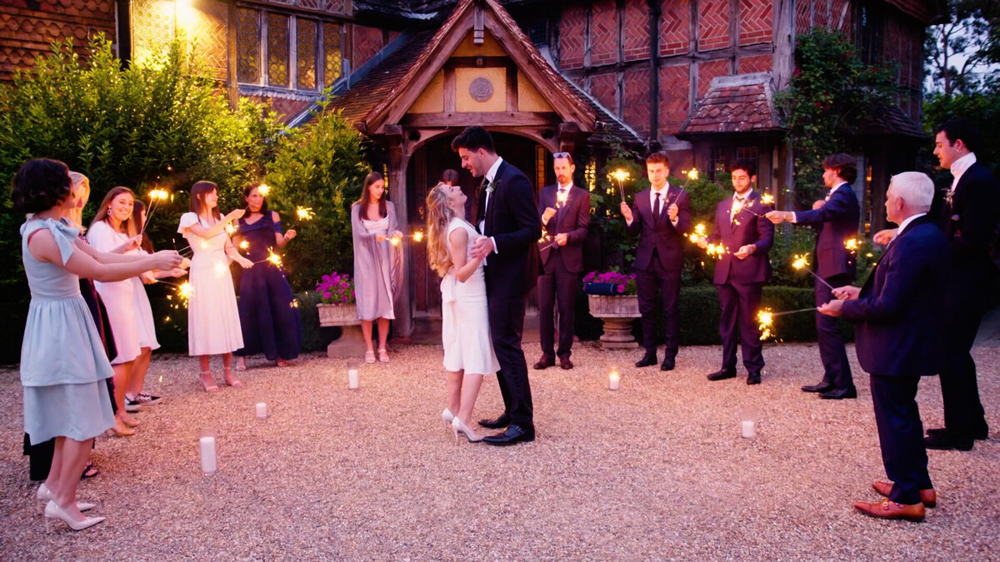
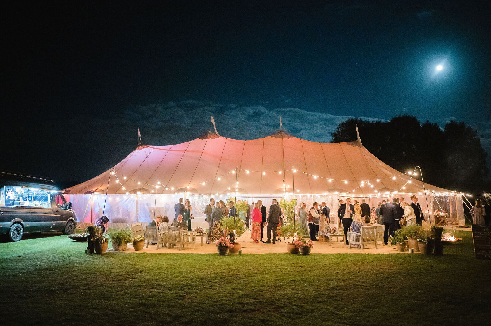

Fun, relaxed & affordable filming for your Chichester wedding
Planning a wedding in Chichester is an exciting journey, and choosing the right videographer is key to reliving those memories forever. At Storyboard, we move away from the traditional, stiff wedding videos. We're all about the fun, the laughter, and the authentic moments that make your day unique. From the quiet morning preparations to the high-energy dance floor celebrations, we capture the soul of your Chichester wedding with a discreet, fly-on-the-wall approach.
Our style is natural and unobtrusive. We don't ask you to pose or "look at the camera." Instead, we film the day as it happens, ensuring you get a film that feels real, emotional, and totally you. Whether you're planning a grand celebration or a small, intimate gathering in Chichester, we're here to document every precious second.
There's a reason Chichester is such a popular choice for couples. The variety of backdrops is incredible—from historic manor houses and charming rustic barns to modern city spaces and beautiful gardens. Every wedding we film in Chichester has its own distinct character, and we love finding those perfect angles that showcase the beauty of your chosen setting.
We keep our process simple so you can focus on enjoying your day. One package, one fixed price (£1499), and all-day coverage. We believe high-quality wedding videography should be accessible, which is why we’ve streamlined everything to offer a premium product at a budget-friendly price for Chichester couples.
View Full Package Details
Chichester is home to some truly spectacular wedding venues. While we love filming at new locations, here are some of the fantastic venues in the area that we are always happy to recommend and work with:
Getting married somewhere else? We love exploring new venues across Chichester and beyond!
We use professional-grade cinematic cameras and audio equipment, but we keep our footprint small. This allows us to blend into your wedding party, capturing those candid laughs and secret glances without being a distraction. The result is a high-energy, fun highlight film and a beautiful documentary of your entire day in Chichester.
Take a look at our style and how we capture the magic of the day:
Video Showcase
Video Showcase
Common questions about filming weddings in the area.
Wedding videography costs in Chichester can vary widely, with many premium services charging upwards of £2,500. At Storyboard, we offer an all-inclusive package for £1499, providing exceptional value without compromising on quality.
Our standard package includes one expert videographer, which is perfect for our discreet and unobtrusive style. This ensures we can move quickly and capture all those spontaneous moments throughout your day in Chichester.
We know you're excited to see your film! We typicaly deliver our Chichester wedding films within 8-12 weeks of the wedding date, often sooner during the off-peak season.
Yes, all travel costs within Chichester are included in our fixed price of £1499. There are no hidden extras or surprise fees for any weddings within this area.
